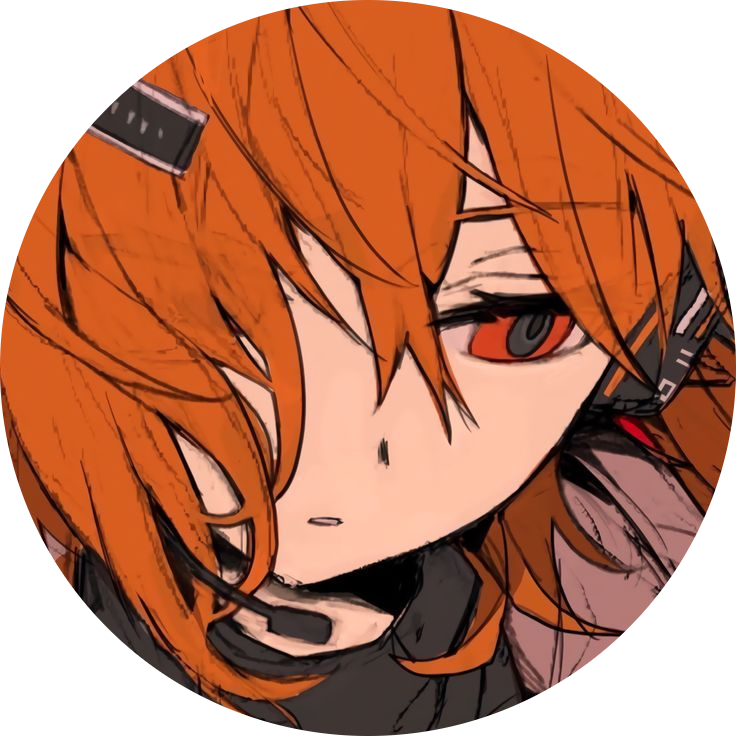
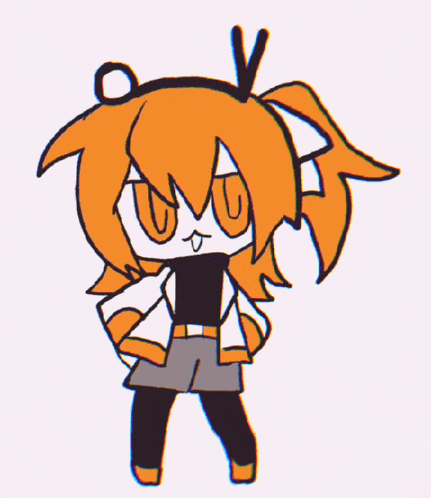

Soy estudiante de Gráfica Interactiva y Diseño Web en la Escuela de Arte de Sevilla, apasionada por el diseño y la creatividad, con cierta experiencia en la creación de contenido visual y gráfico. Fuera del campo académico, soy artista digital freelancer y desarrolladora de videojuegos desde el software de RPG Maker. Tengo conocimientos de HTML, CSS y JavaScript. Actualmente, publico mis juegos en la plataforma Itch.io.

Llevo estudiando en la E.A.S.D. de Sevilla por 3 años, habiéndome graduado de Bachillerato de Artes antes de entrar en este Grado Superior. Mis hobbies son jugar a videojuegos (especialmente a novelas visuales, RPGs y juegos estilo Metroidvania) y utilizo y programo voces sintéticas en el software de UTAU. También me gusta tocar la guitarra eléctrica.
Me gustan mucho los animales marinos tales como las focas y los manatíes. Además de dibujar en digital, también sé dibujar en tradicional. Sé utilizar lápiz, carboncillo, acuarelas, pasteles y óleos.